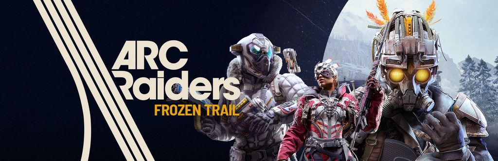
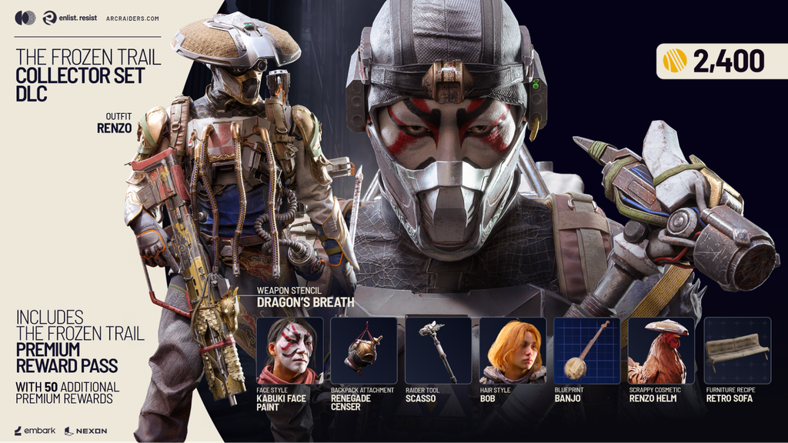
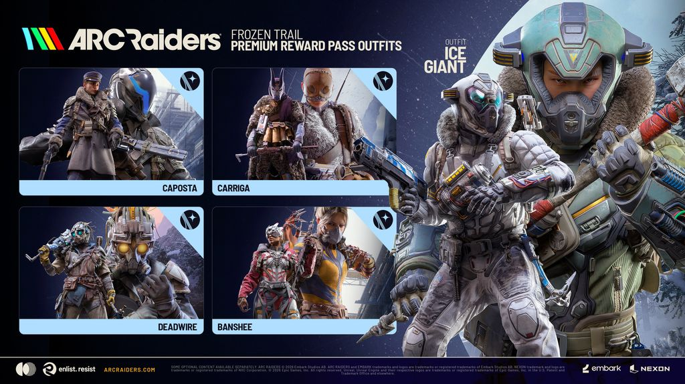
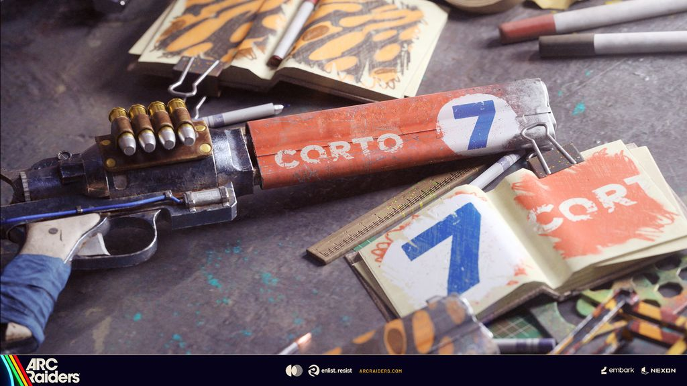

아크 레이더스 보상 패스 레이더 덱 차이, 기존 덱 보상 레거시 패스로 받는 법
10월 8일(목) 2.0 업데이트로 얼어붙은 산길이 열리면서 레이더 덱이 보상 패스로 바뀌었는데요, 그러면 그동안 채우던 덱 보상은 어디로 가는지, 새 패스는 뭐가 다르고 얼마를 내야 하는지가 제일 궁금해지잖아요. 결론부터 말씀드리면 보상 패스는 레이더 덱의 후속 시스템이고, 기존 덱 보상은 레거시 패스로 옮겨졌답니다. 이번 글에서는 이 진행 시스템 변경만 하나씩 짚어 볼게요. 공식 사전 안내(9월 28일)와 패치노트(10월 8일)를 기준으로 정리했습니다. 참고로 10월 8일부터 12일까지는 무료 플레이 기간이라고 공식 출시 기사에 나와 있어요.

보상 패스는 레이더 덱과 무엇이 다른가요?
보상 패스는 레이더 덱을 이어받은 새 진행 시스템이고, 가장 크게 바뀐 건 진행 재화예요. Cred는 게임에서 빠지고 Reward Points가 그 자리를 채웠어요.
| 구분 | 레이더 덱 | 보상 패스 |
|---|---|---|
| 진행 재화 | Cred | Reward Points |
| 재화의 쓰임 | 모아 두었다가 새 덱에 사용 | 활성으로 둔 패스 1개에 자동 반영 |
왜 바꿨는지도 공식 기사에 나와 있어요. Cred가 따라가기 벅찰 만큼 빨리 쌓여서 새 덱이 나오면 모아 둔 Cred로 곧바로 끝낼 수 있었고, 그러다 보니 보상을 향한 동기가 떨어졌다는 설명이거든요. 그래서 패스는 업데이트와 함께 들어왔고, 모든 플레이어가 플레이로 채우는 방식이 됐어요. 공식 쪽에서는 레이더 덱에 몇 가지 장점을 더한 진화형이라고 소개하고 있죠. 여기서 활성 패스는 지금 Reward Points를 받고 있는 패스를 가리키는데, 얼어붙은 산길 패스와 레거시 패스 중 하나를 골라 두면 업적을 끝낼 때마다 그쪽 진행이 올라가요.
기존 레이더 덱 보상은 레거시 패스로 받나요?
네, 기존 레이더 덱은 레거시 패스로 옮겨졌고 활성 패스로 설정하면 이어서 받을 수 있어요.
| 내 상황 | 보상 패스 이후 |
|---|---|
| 덱 보상을 이미 해금했어요 | 레거시 패스에서 지급된 상태로 표시돼요 |
| 덱을 다 못 채웠어요 | 레거시 패스를 활성으로 두고 이어서 진행해요 |
| 예전 덱에서 못 얻던 보상이 있어요 | 레거시 패스를 진행하면 해금돼요 |
기존 덱은 어디로 사라진 게 아니라 레거시 패스 안으로 옮겨 간 거예요. 레거시 패스는 덱에 있던 꾸미기 보상과 레이더 토큰을 무료 패스 하나로 묶은 거라 돈을 들일 일은 없어요. 이어서 받으려면 활성 패스를 레거시 패스로 바꿔 두면 되고, 그때부터 업적으로 번 Reward Points가 레거시 패스 쪽에 반영됩니다.
보상 패스 비용과 레벨은 어떻게 되나요?
얼어붙은 산길 패스는 60레벨 구성이고, 프리미엄은 레이더 토큰 1,150개로 얻어요.
- 얼어붙은 산길 패스: 무료·프리미엄 2트랙, 60레벨
- 프리미엄 해금: 레이더 토큰 1,150개
- 레거시 패스: 무료 패스
- Collector Set DLC(Xbox·PlayStation·Epic·Steam)에도 프리미엄 패스 접근권이 들어 있어요

프리미엄은 게임 안에서 레이더 토큰 1,150개로 해금하는 길이 있고, Collector Set DLC로 접근하는 길이 따로 있어요. 한 패스에 무료·프리미엄 두 트랙이 있고, 공식 기사는 프리미엄을 끝까지 채우면 해금에 쓴 레이더 토큰을 도로 벌게 된다고 설명하고 있어요.
무료 트랙과 프리미엄 트랙은 무엇이 다른가요?
무료 트랙은 신규 기본 의상과 게임플레이 아이템을 주고, 프리미엄 트랙은 의상 변형과 꾸미기 쪽 보상으로 채워져 있어요.
| 구분 | 무료 | 프리미엄 |
|---|---|---|
| 의상 | 신규 기본 의상 전부 | 신규 의상의 프리미엄 토글·개조·컬러웨이 |
| 무기·가젯·아이템 | 신규 무기·가젯·아이템 포함 | 게임플레이 아이템 없음 |
| 꾸미기 | 신규 꾸미기 아이템 | 전설 무기 스텐실(독점), 헤어스타일 |
| 레이더 토큰 | 합계 최대 200개 | 최대 1,150개 |

무기·가젯·아이템은 무료 트랙에만 있다는 점이 핵심이에요. 공식 기사도 프리미엄 패스에는 게임플레이에 이득을 주는 아이템이 없다고 밝히고 있고, 스텐실은 패치노트에서 무기 외형을 꾸미는 꾸미기 옵션으로 소개돼요. 그래서 프리미엄은 의상 변형이나 헤어스타일 같은 외형 선택지로 보시면 됩니다. 저라면 외형에 크게 끌리지 않는 이상 무료 트랙부터 보겠어요.

업적(Feats)은 어떻게 채우나요?
보상 패스는 업적(Feats)을 완료해서 채우고, 난이도에 따라 Reward Points가 15·25·50씩 들어와요.
| 난이도 | Reward Points | 주간 마일스톤 진행도 |
|---|---|---|
| Easy | 15 | +1 |
| Medium | 25 | +2 |
| Hard | 50 | +3 |
패스에서 나오는 보상은 의상, 꾸미기 아이템, 가젯, 무기, 아이템, 레이더 토큰 이렇게 여섯 갈래예요. 업적을 끝낼 때마다 Reward Points가 쌓이고, 그 포인트로 레벨이 오르면서 보상이 열리는 구조라고 보시면 됩니다. 표의 +1·+2·+3은 마일스톤 개수가 아니라 진행도 칸 수예요. Hard 하나는 Easy 세 개와 진행도가 같고(+3), Reward Points는 50 대 45라서 포인트만 보면 Hard 쪽이 조금 더 많죠.
주간 마일스톤은 진행도가 4·8·12에 닿을 때마다 하나씩 달성되고, 하나에 250 Reward Points예요. 주마다 3개라서 다 채우면 한 주에 750 Reward Points가 더 들어오는데, 진행도 12는 Hard 4개나 Easy 12개로 채울 수 있어요. 다 채운 뒤에도 업적은 계속 할 수 있지만, 주간 타이머가 초기화되기 전까지는 주요 마일스톤 보상이 더 나오지 않습니다.
아직 알려지지 않은 건 어떤 건가요?
패스 종료일과 레거시 패스의 레벨 수처럼 아직 밝혀지지 않은 항목이 몇 가지 있어요. 특히 패스가 언제까지 열려 있는지는 가장 궁금한 부분인데요, 기간이나 한정 여부를 알 수 있는 정보는 아직 없고, 아래 다섯 가지도 마찬가지예요.
- 얼어붙은 산길 패스와 레거시 패스의 종료일, 기간 한정 여부
- 레거시 패스의 레벨 수와 필요한 Reward Points 총량
- 활성 패스를 바꿀 때 쌓인 Reward Points가 이월되는지
- 못 받은 덱 보상이 레거시 패스 어느 단계에 놓이는지
- 프리미엄 구매 환불 규정과 레이더 토큰의 현금 환산, Collector Set 가격
확인 위치: 인게임 패스 화면, 공식 공지 · 확인되면 목록 문구를 값으로 교체해 주세요.
자주 묻는 질문
Q. 업적을 끝냈는데 어느 패스가 올라가나요?
끝낸 순간 활성으로 두고 있던 패스에 쌓여요. 업적에 들어가기 전에 활성 패스부터 확인해 두면 엉뚱한 패스에 쌓는 일이 없답니다.
Q. 프리미엄을 샀는데 보상에 잠금 아이콘이 그대로예요.
패치노트에 알려진 문제로 올라와 있어요. 해금은 됐는데 프리미엄 보상에 잠금 아이콘만 남는 표시 문제이고, 수정 여부는 이후 패치노트에 올라오는지 보면 돼요.
Q. Collector Set에는 프리미엄 패스 말고 뭐가 들어 있나요?
Renzo 의상 세트, Dragon's Breath 무기 스텐실, Bob 헤어스타일에 2,400개짜리 토큰 묶음이 들어 있고, Kabuki Face Paint(얼굴 스타일)·Renegade Censer(가방 장식)·Scasso(레이더 도구)·Renzo Helm(Scrappy 꾸미기)도 구성에 있어요. 전초기지용 Retro Sofa와 Banjo 설계도는 이 DLC에서만 얻을 수 있어요.
Q. 프리미엄 의상은 어떤 것들이 있나요?
Caposta, Carriga, Deadwire, Banshee 네 종류와 Ice Giant 의상이 소개됐어요.
아크 레이더스 보상 패스 정리
순서는 간단하답니다. 지금 가장 갖고 싶은 보상이 들어 있는 패스를 활성으로 두면 업적으로 번 Reward Points가 그쪽으로 쌓이니까요. 덱 보상이 남아 있다면 레거시 패스, 새 의상에 끌린다면 얼어붙은 산길 패스부터 가시면 됩니다. 프리미엄은 레이더 토큰 1,150개로 해금하지만 끝까지 채우면 그만큼을 다시 벌 수 있는 구조라서, 외형에 끌릴 때 고르면 충분하고요. 무기와 가젯이 필요하다면 무료 트랙이 먼저죠. 다들 업적 챙기면서 즐겜하세요~
| 내 상황 | 먼저 볼 패스 | 이유 |
|---|---|---|
| 덱 보상이 남아 있어요 | 레거시 패스 | 무료 패스라 비용이 없고 못 받은 보상이 해금돼요 |
| 새 의상이 마음에 들어요 | 얼어붙은 산길 패스 | 신규 기본 의상은 무료 트랙, 변형은 프리미엄이에요 |
| 무기·가젯이 필요해요 | 얼어붙은 산길 무료 트랙 | 게임플레이 아이템은 무료 트랙에만 있어요 |
참고한 곳 (2026.10.10 기준)
· ARC Raiders 공식 기사: 얼어붙은 산길 보상 패스
· ARC Raiders 공식 패치노트: 얼어붙은 산길 2.0 업데이트
· ARC Raiders 공식 기사: 얼어붙은 산길 출시
· 인벤 기사: 얼어붙은 산길 한글 표기 확인